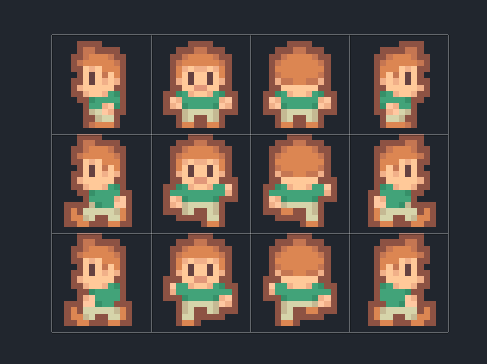
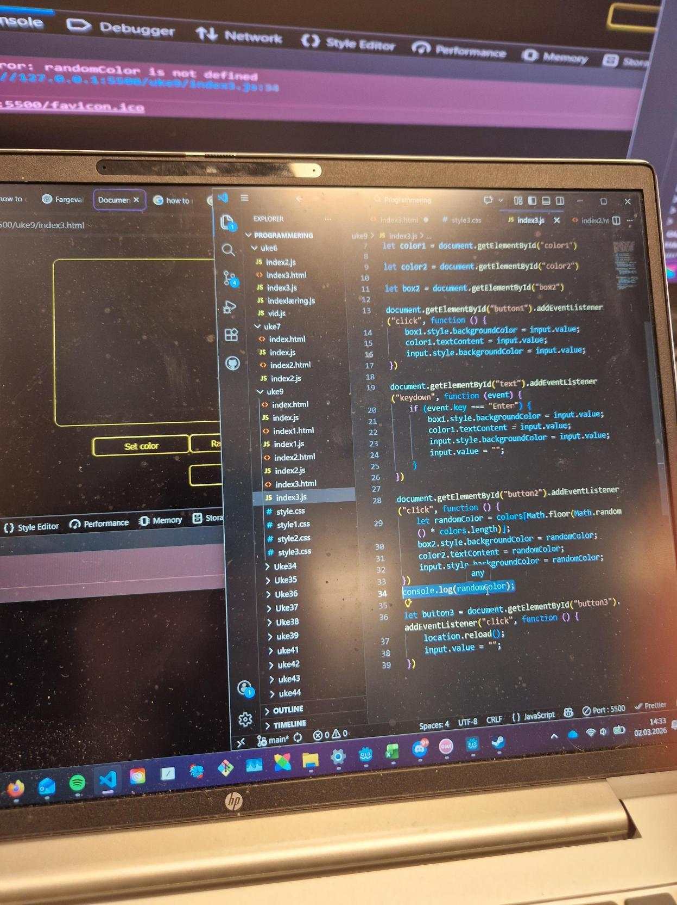

YFF
Prosjekt uke

Disse er bilder av prosessen min og hvilker deler som jeg trengte til å prøve å lage en pc
På denne oppgaven lærte jeg bedre hvordan jeg kunne spørre andre om hjelp, hvordan pc deler funker, hvor forsiktig du burde være med delene, hvordan lære bedre fra andre og hvordan ta ut og inn deler
Jeg ble stolt over hvordan jeg klarte å lage pc'en selv etter det kom mange utfordringer (CPU, bytting av alle deler) som jeg klarte å fikse med mye hjelp (Erik, David)
Jeg tenker en av tingene som kunne blitt bedre hadde vært å være mer selvstendig når jeg prøvde å gjøre oppgaven
Car Game

Disse bildene viser noen av problemstillingene og prossesen til å prøve å lage et 2d spill
På denne oppgaven lærte jeg mye bedre hvordan godot (game engine) virker, hvordan mange flere funksjoner virker og hvordan prøve å problemsøke når koden ikke hørrer det du vil idethele tatt
jeg ble stolt over hvordan jeg klarte å fokusere gjennom hele seksjonen på videoen for å lage spillet (3+ timer), hvordan jeg klarte å fikse noen av de mange problemene (endscreen, red border, duplicated cars) selv med mye hjelp
Gjennom oppgaven er noen av tingene jeg tenker kunne blitt bedre hadde vært å få det røde området (sluttpunktet) til å sende deg til tittel skjermen, å stoppe biler fra å være inne i hverandre og å få biler til å komme selv når de ikke er på skjermen
Praksis

Disse bildene viser hva slags forkjellige type oppgaver jeg har hatt gjennom praksis
Gjennom praksis perioden lærte jeg:
- Hvordan snakke med kunder (elever/lærere/ledelsen)
- Hvordan feilsøke etter forkjellige problemer med pc'er (ikke virkende tastatur, exam.net feil)
- Hvordan lete etter feil på skole utstyr (dårlig lyd, stuttering, ikke virkende prosjektor) på skole rutine sjekk
- Hvordan lære bedre gjennom observasjoner av de rundt meg.